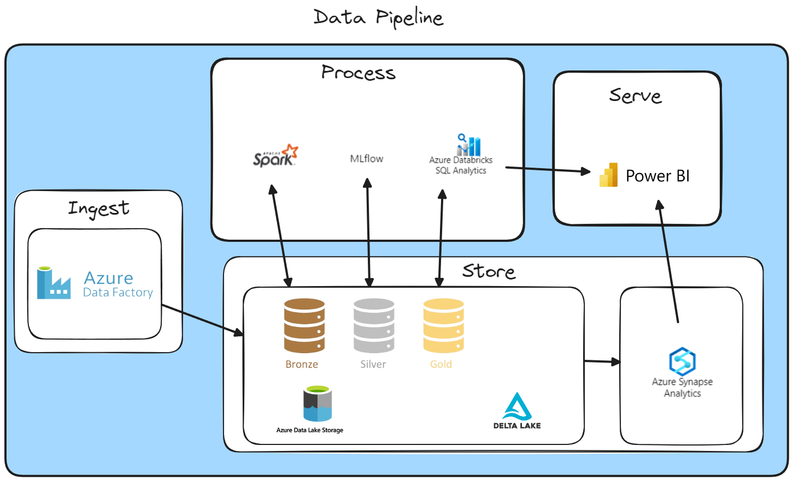

Projeto de Engenharia de Dados
Bem-vindo à documentação do nosso projeto de engenharia de dados. Este projeto envolve a utilização do MongoDB para exportação de dados para o Azure Synapse, processamento de dados em várias camadas (Landing, Bronze, Silver, Gold) e visualização de informações no Power BI.
Visão Geral
Neste projeto, seguimos um fluxo de dados estruturado em várias camadas para garantir a qualidade e a integridade dos dados antes de apresentá-los no Power BI. Abaixo está uma visão geral de cada componente envolvido no processo.
Tecnologias Utilizadas
- MongoDB: Utilizado para armazenamento de dados.
- Azure Synapse: Utilizado para processamento e análise de dados.
- Power BI: Utilizado para visualização de dados.
- MkDocs: Utilizado para esta documentação.
Estrutura do Projeto
1. Camada Landing
A camada de landing é onde os dados são inicialmente armazenados quando recebidos de diferentes fontes. Aqui, mantemos os dados em seu formato bruto e original.
2. Camada Bronze
Na camada bronze, os dados brutos são transformados em um formato mais estruturado, mas ainda contêm alguns erros e duplicatas.
3. Camada Silver
A camada silver é onde os dados são limpos e preparados para análises mais detalhadas. Nesta etapa, removemos duplicatas e corrigimos erros.
4. Camada Gold
Na camada gold, os dados são refinados e otimizados para o consumo final por parte de sistemas de BI, como o Power BI. Esses dados são altamente estruturados e prontos para análises detalhadas.
Fluxo de Trabalho
- Ingestão de Dados no MongoDB: Os dados são coletados de várias fontes e armazenados no MongoDB.
- Exportação para o Azure Synapse: Os dados são exportados do MongoDB para o Azure Synapse para processamento adicional.
- Processamento em Camadas:
- Landing: Armazenamento de dados brutos.
- Bronze: Transformação inicial e limpeza básica.
- Silver: Limpeza e preparação avançada.
- Gold: Refino e otimização final.
- Visualização no Power BI: Os dados refinados são carregados no Power BI para criação de dashboards e relatórios interativos.
Fluxo da Pipeline de dados

Navegação
Documentação gerada com MkDocs.